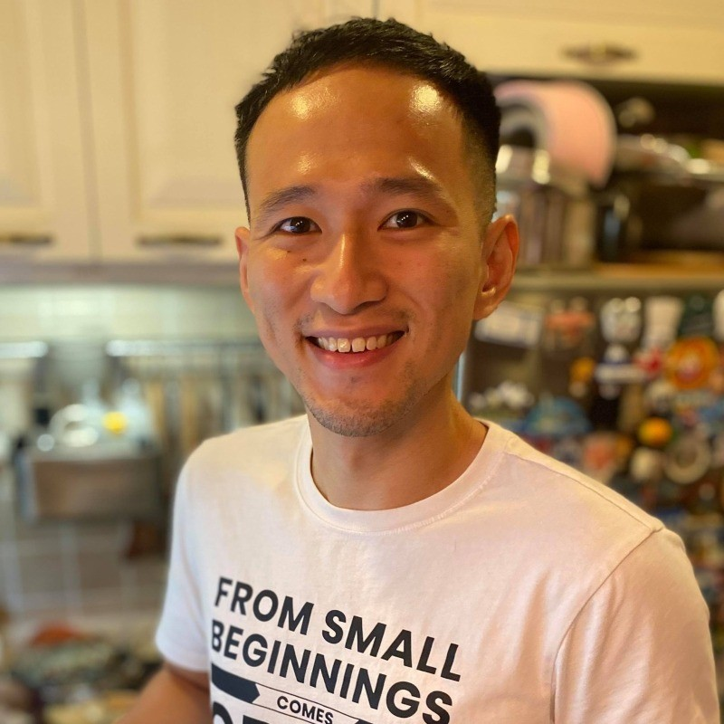

Hello, I'm Calvin Chan 👋
Software Engineer
About Me
I am from Hong Kong 🇭🇰, and currently based in UK 🇬🇧
I'd describe myself as a product guy, I like building user&customer-facing products. I started my career in 2013 as a mobile app developer, and over the years, I expanded my expertise to frontend, backend, and eventually distributed systems — growing from early-stage startups to FAANG.
Throughout the years, I've grown from a junior individual contributor into a tech lead, taking on responsibilities that span across teams and domains. I take technical ownership of product areas, working closely with stakeholders and customers to explore business opportunities, shape product roadmaps, architect systems, define GTM strategies, and lead+coach engineers from end-to-end execution to deliver impact to millions of businesses and billions of end-users across the globe (thanks Meta and eBay 😘)
I believe in the motto “we are only 1% finished” - it means there is always room for improvement, whether on product side or infrastructure's. Also, "nothing is someone else’s problem" - not only pointing out what a problem is, but also proposing how we should tackle and improve it.
Skills & Technologies
Frontend: Typescript(Javascript), React, GraphQL, Relay(GraphQL@fb), Redux, Flow, ESLint, Jest, Webpack, Storybook
Backend: NextJS(NodeJS), Golang, gRPC, WebSocket, Hack(PHP@fb), Python, PostgreSQL, MySQL, Redis, Kafka, RabbitMQ, WebRTC, AWS Kinesis, SQS, Batch, CloudFront, S3, DynamoDB
Mobile: Swift, Objective-C, Java
Data: Airflow, Databricks, Spark, Daiquery, Presto, Unidash
Monitoring: CloudWatch, Kibana, Scuba, Logstash, Prometheus, Grafana
Others: Docker, Git, Mercurial, Sandcastle, CircleCI, Jenkins, Elastic Search, yarn, npm, Lerna, MCP, Figma
Professional Experience
Senior Software Engineer
Samsara • 2024 Apr - Present
Focus on Speed Limits, Speeding, and Safety Event Review within Safety Org. Define and lead engineering projects across full-stack and firmwares from design to execution. Mentor and coach engineers.
Senior Business Engineer / Solution Engineer
Meta • 2021 Jun - 2024 Apr
Member of technical staff in Business Engineering Org. Focused on business engineering, explore ideas from customers' feedback, then build prototypes and iterate to evaluate the prototypes before productionization for the sake of long-term engineering investment within Meta.
Full Stack Software Engineer
eBay • 2019 Sep - 2020 Sep
Member of technical staff in eBay Classifieds Group, worked on Gumtree Australia Motors Team focusing on building platform tools for the sake of minimizing the friction in microservice development across Gumtree
Co-founder / Team Lead / Software Engineer
At multiple startups • Pre 2019
Worked in messaging, e-commerce, social platform startups. More than just an engineer. Collaborate with customers to explore business ideas and turn them into products, lead a squad to prototype, iterate and deliever. All the journey started from a mobile app startup that we raised 1M USD from investors in the US as a college-new-grad back in 2014.